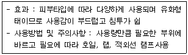
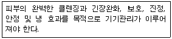

미용사(피부) (2009-07-12 기출문제)
1과목: 피부미용학
1. 필오프 타입 마스크의 특징이 아닌 것은?
- 젤 또는 액체형태의 수용성으로 바른 후 건조되면서 필름막을 형성한다.
- 볼 부위는 영양분의 흡수를 위해 두껍게 바른다.
- 팩 제거 시 피지나 죽은 각질 세포가 함께 제거됨으로 피부청정효과를 준다.
- 일주일에 1~2회 사용한다.
(정답률: 86%)

2. 매뉴얼 테크닉의 기본 동작 중 하나인 쓰다듬기에 대한 내용과 가장 거리가 먼 것은?
- 매뉴얼 테크닉의 처음과 끝에 주로 이용된다.
- 혈액의 림프의 순환을 도모한다.
- 자율신경계에 영향을 미쳐 피부에 휴식을 준다.
- 피부에 탄력성을 증가시킨다.
(정답률: 68%)
3. 모세혈관 확장피부에 효과적인 성분이 아닌 것은?
- 루틴
- 아줄렌
- 알로에
- A.H.A
(정답률: 79%)
4. 다음의 설명에 가장 적합한 팩은?

- 크림팩
- 벨벳(시트)팩
- 분말팩
- 석고팩
(정답률: 75%)
5. 피부유형별 적용 화장품 성분이 맞게 짝지어진 것은?
- 건성피부 - 클로로필, 위치하젤
- 지성피부 - 콜라겐, 레티놀
- 여드름 피부 - 아보카드 오일, 올리브 오일
- 민감성 피부 - 아줄렌, 비타민 B5
(정답률: 66%)
6. 온습포의 작용으로 볼 수 없는 것은?
- 모공을 수축시키는 작용이 있다.
- 혈액순환을 촉진시키는 작용이 있다.
- 피지분비선을 자극시키는 작용이 있다.
- 피부조직에 영양공급이 원활히 될 수 있도록 작용한다.
(정답률: 87%)
7. 딥 클렌징의 효과 및 목적과 가장 거리가 먼 것은?
- 다음 단계의 유효성분 흡수율을 높여준다.
- 모공 깊숙이 있는 피지와 각질제거를 목적으로 한다.
- 피지가 모낭 입구 밖으로 원활하게 나오도록 해준다.
- 효과적인 주름 관리가 되도록 해준다.
(정답률: 83%)
8. 다음 중 세정력이 우수하며, 지성, 여드름피부에 가장 적합한 제품은?
- 클렌징 젤
- 클렌징 오일
- 클렌징 크림
- 클렌징 밀크
(정답률: 68%)
9. 제모의 설명으로 틀린 것은?
- 왁싱을 이용한 제모는 얼굴이나 다리의 털을 제거하는 데 적합하며 모근까지 제거되기 때문에 보통 4~5주 정도 지속된다.
- 제모 적용부위를 사전에 깨끗이 씻고 소독한다.
- 제모 후에 진정제품을 피부 표면에 발라준다.
- 왁스를 바른 후 떼어 낼 때는 아프지 않게 천천히 떼어 내는 것이 좋다.
(정답률: 91%)
10. 클렌징 제품의 올바른 선택조건이 아닌 것은?
- 클렌징이 잘 되어야 한다.
- 피부의 산성막을 손상시키지 않는 제품이어야 한다.
- 피부유형에 따라 적절한 제품을 선택해야 한다.
- 충분하게 거품이 일어나는 제품을 선택한다.
(정답률: 82%)
11. 피부관리 후 피부미용사가 마무리해야 할 사항과 가장 거리가 먼 것은?
- 피부관리 기록카드에 관리내용과 사용 화장품에 대해 기록한다.
- 고객이 집에서 자가 관리를 잘하도록 홈 케어에 대해서도 기록하여 추후 참고 자료로 활용한다.
- 반드시 메이크업을 해준다.
- 피부미용 관리가 마무리되면 베드와 주변을 청결하게 정리한다.
(정답률: 94%)
12. 지성피부의 특징으로 맞는 것은?
- 모세혈관이 약화되거나 확장되어 피부표면으로 보인다.
- 피지분비가 왕성하여 피부 번들거림이 심하며 피부결이 곱지 못하다.
- 표피가 얇고 피부표면이 항상 건조하고 잔주름이 쉽게 생긴다.
- 표피가 얇고 투명해 보이며 외부자극에 쉽게 붉어진다.
(정답률: 88%)
13. 손가락이나 손바닥으로 연속적인 쓰다듬기 동작을 하는 매뉴얼 테크닉 방법은?
- 프릭션
- 페트리사지
- 에플러라지
- 러빙
(정답률: 81%)
14. 다음 중 스크럽 성분의 딥클렌징을 피하는 것이 가장 좋은 피부는?
- 모공이 넓은 지성피부
- 모세혈관이 확장되고 민감한 피부
- 정상피부
- 지성 우세 복합성 피부
(정답률: 89%)
15. 바디 랩에 관한한 설명으로 틀린 것은?
- 비닐을 감쌀 때는 타이트하게 꽉 조이도록 한다.
- 수증기나 드라이 히트는 몸을 따뜻하게 하기 위해서 사용되기도 한다.
- 보통 사용되는 제품은 앨쥐나 허브, 슬리밍 크림 등이다.
- 이 요법은 독소제거나 노폐물의 배출 증진, 순환 증진을 위해서 사용된다.
(정답률: 82%)
16. 피부미용의 개념에 대한 설명으로 가장 거리가 먼 것은?
- 피부미용이란 내 외적 요인으로 인한 미용상의 문제를 물리적이나 화학적인 방법을 이용하여 예방하는 것이다.
- 피부의 생리기능을 자극함으로써 아름답고 건강한 피부를 유지하고 관리하는 미용기술을 말한다.
- 피부미용은 과학적 지식을 바탕을 다양한 미용적인 관리를 행하므로 하나의 과학이라 말 할 수 있다.
- 과학적인 지식과 기술을 바탕으로 미의 본질과 형태를 다룬다는 의미는 있으나 예술이라고는 할 수 없다.
(정답률: 73%)
17. 왁스를 이용한 제모의 부적용증과 가장 거리가 먼 것은?
- 신부전
- 정맥류
- 당뇨병
- 과민한 피부
(정답률: 45%)
18. 건성피부, 중성피부, 지성 피부를 구분하는 가장 기본적인 피부 유형 분석 기준은?
- 피부의 조직상태
- 피지분지 상태
- 모공의 크기
- 피부의 탄력도
(정답률: 76%)
19. 자외선의 영향으로 인한 부정적인 효과는?
- 홍반반응
- 비타민 D 형성
- 살균효과
- 강장효과
(정답률: 73%)
20. 땀의 분비가 감소하고 갑상선 기능의 저하, 신경계 질환의 원인이 되는 것은?
- 다한증
- 소한증
- 무한증
- 액취증
(정답률: 79%)
2과목: 피부학 및 해부생리학
21. 장기간에 걸쳐 반복하여 긁거나 비벼서 표피가 건조하고 가죽처럼 두꺼워진 상태는?
- 가피
- 낭종
- 태신화
- 반흔
(정답률: 72%)
22. 화상의 구분 중 홍반, 부종, 통증뿐만 아니라 수포를 형성하는 것은?
- 제 1도 화상
- 제 2도 화상
- 제 3도 화상
- 중급화상
(정답률: 74%)
23. 원주형의 세포가 단층으로 이어져 있으며 각질형성세포와 색소형성세포가 존재하는 피부세포층은?
- 기저층
- 투명층
- 각질층
- 유극층
(정답률: 77%)
24. 피부에서 피지가하는 작용과 관계가 가장 먼 것은?
- 수분증발억제
- 살균작용
- 열발산방지작용
- 유화작용
(정답률: 43%)
25. 각화유리질과립은 피부 표피의 어떤 층에 주로 존재하는가?
- 과립층
- 유극층
- 기저층
- 투명층
(정답률: 70%)
26. 다음 중 진피의 구성세포는?
- 멜라닌 세포
- 랑게르한스 세포
- 섬유아 세포
- 머켈 서포
(정답률: 47%)
27. 기미, 주근깨 피부관리에 가장 적합한 비타민은?
- 비타민A
- 비타민 B1
- 비타민 B2
- 비타민 C
(정답률: 90%)
28. 안륜근의 설명으로 맞는 것은?
- 뺨의 벽에 위치하며 수축하면 뺨이 안으로 들어가서 구강 내압을 높인다.
- 눈꺼풀의 피하조직에 있으면서 눈을 감거나 깜박거릴 때 이용된다.
- 구각을 외 상방으로 끌어 당겨서 웃는 표정을 만든다.
- 교근 근막의 표층으로부터 입 꼬리 부분에 뻗어 있는 근육이다.
(정답률: 77%)
29. 근육의 기능에 따른 분류에서 서로 반대되는 작용을 하는 근육을 무엇이라 하는가?
- 길항근
- 신근
- 반건양근
- 협력근
(정답률: 53%)
30. 골격근의 기능이 아닌 것은?
- 수의적 운동
- 자세유지
- 체중의 지탱
- 조혈작용
(정답률: 72%)
3과목: 화장품학
31. 원형질막을 통한 물질의 이동 과정에 관한 설명 중 틀린 것은?
- 확산은 물질 자체의 운동에너지에 의해 저농도에서 고농도로 물질이 이동하는 것이다.
- 포도당은 보조 없이 원형질막을 통과할 수 없으며 단백질과 결합하여 세포 안으로 들어가는 것을 촉진 확산한다.
- 삼투 현상은 높은 물 농도에서 낮은 물 농도로 물 분자 만이 선택적으로 투과하는 것을 말한다.
- 여과는 높은 압력이 낮은 압력이 있는 곳으로 이동하는 압력 경사에 의해 이루어지는 것이다.
(정답률: 45%)
32. 척주에 대한 설명이 아닌 것은?
- 머리와 몸통을 움직일 수 있게 함
- 성인의 척주를 옆에서 보면 4개의 만곡이 존재
- 경추 5개, 흉추 11개, 요추 7개, 천골 1개 미골 2개로 구성
- 척수를 뼈로 감싸면서 보호
(정답률: 68%)
33. 안면의 피부와 저작근에 존재하는 감각신경과 운동신경의 혼합신경으로 뇌신경 중 가장 큰 것은?
- 시신경
- 상차신경
- 안면신경
- 미주신경
(정답률: 34%)
34. 림프의 주된 기능은?
- 분비작용
- 면역작용
- 체절보호작용
- 체온조절 작용
(정답률: 55%)
35. 피부를 분석 시 고객과 관리사가 동시에 피부상태를 보면서 분석하기에 가장 적합한 피부분석기기는?
- 확대경
- 우드램프
- 브러싱
- 스킨스코프
(정답률: 62%)
36. 바이브레이터기의 올바른 사용법이 아닌 것은?
- 기기관리도중 지속성이 끊어지지 않게 한다.
- 압력을 최대한 주어 효과를 극대화 시킨다.
- 항상 깨끗한 헤드를 사용하도록 유의한다.
- 관리도중 신체손상이 발생하지 않도록 헤드부분을 잘 고정한다.
(정답률: 89%)
37. 갈바닉 전류에서 음극의 효과는?
- 진정효과
- 통증감소
- 알칼리성반응
- 혈관수축
(정답률: 48%)
38. 직류와 교류에 대한 설명으로 옳은 것은?
- 교류를 갈바닉 전류라고도 한다.
- 교류전류에는 평류, 단속 평류가 있다.
- 직류는 전류의 흐르는 방향이 시간의 흐름에 따라 변하지 않는다.
- 직류전류에는 정현파, 감응, 격동 전류가 있다.
(정답률: 70%)
39. 다음 보기와 같은 내용은 어떠한 타입의 피부 관리 중점 사항인가?

- 건성피부
- 지성피부
- 복합성 피부
- 민감성 피부
(정답률: 76%)
40. 고주파 직접법의 주 효과에 해당하는 것은?
- 수렴효과
- 피부강화
- 살균효과
- 자극효과
(정답률: 51%)
4과목: 피부미용기기학
41. 아로마오일을 피부에 효과적으로 침투시키기 위해 사용하는 식물성 오일은?
- 에센셜 오일
- 캐리어 오일
- 트랜스 오일
- 미네랄 오일
(정답률: 62%)
42. 메이크업 화장품 중에서 인료가 균일하게 분산되어 있는 형태로 대부분 O/W형 유화타입이며, 투명감 있게 마무리되므로 피부에 결점이 별로 없는 경우에 사용하는 것은?
- 트윈 케이크
- 스킨커버
- 리퀴드 파운데이션
- 크림 파운데이션
(정답률: 77%)
43. 여드름 피부용 화장품에 사용되는 성분과 가장 거리가 먼 것은?
- 살리실산
- 글리시리진산
- 아줄렌
- 알부틴
(정답률: 70%)
44. 각질제거용 화장품에 주로 쓰이는 것으로 죽은 각질을 빨리 떨어져 나가게 하고 건강한 세포가 피부를 구성할 수 있도록 도와주는 성분은?
- 알파-히드록시산
- 알파-토코페롤
- 라이코펜
- 리포좀
(정답률: 72%)
45. 아로마 오일에 대한 설명으로 가장 적절한 것은?
- 수증기 증류법에 의해 얻어진 아로마오일이 주로 사용되고 있다.
- 아로마 오일은 공기 중의 산소나 빛에 안정하기 때문에 주로 투명용기에 보관하여 사용한다.
- 아로마 오일은 주로 향기식물의 줄기나 뿌리 부위에서만 추출된다.
- 아로마 오일은 주로 베이스노트 이다.
(정답률: 64%)
46. 화장품의 분류에 관한 설명 중 틀린 것은?
- 마사지 크림은 기초화장품에 속한다.
- 샴푸, 헤어린스는 모발용 화장품에 속한다.
- 퍼퓸, 오데코롱은 방향화장품에 속한다.
- 페이스파우더는 기초화장품에 속한다.
(정답률: 74%)
47. 유아용 제품과 저자극성 제품에 많이 사용되는 계면활성제에 대한 설명 중 옳은 것은?
- 물에 용해될 때, 친수기에 양이온과 음이온을 동시에 갖는 계면활성제
- 물에 용해될 때, 이온으로 해리하지 않는 수산기, 에테르결합, 에스테르 등을 분자 중에 갖고 있는 계면활성제
- 물에 용해될 때, 친수기 부분이 음이온으로 해리되는 계면활성제
- 물에 용해될 때, 친수기 부분이 양이온으로 해리되는 계면활성제
(정답률: 61%)
48. 전염병예방법 중 제 1군 전염병에 해당되는 것은?
- 백일해
- 공수병
- 세균성 이질
- 홍역
(정답률: 54%)
49. 다음 중 오염된 주사기, 면도날 등으로 인해 감염이 잘 되는 만성 전염병은?
- 렙토스피라증
- 트라코마
- 간염
- 파라티푸스
(정답률: 61%)
50. 공중보건에 대한 설명으로 가장 적절한 것은?
- 개인을 대상으로 한다.
- 예방의학을 대상으로 한다.
- 집단 또는 지역사회를 대상으로 한다.
- 사회의학을 대상으로 한다.
(정답률: 86%)
5과목: 공중위생학
51. 독소형 식중독의 원인균은?
- 황색 포도상규균
- 장티푸스균
- 돈 콜레라균
- 장염균
(정답률: 62%)
52. 다음 중 아포를 형성하는 세균에 대한 가장 좋은 소독법은?
- 적외선 소독
- 자외선소독
- 고압증기멸균 소독
- 알콜 소독
(정답률: 71%)
53. 여러 가지 물리화학적 방법으로 병원성 미생물을 가능한 제거 사람에게 감염의 위험이 없도록 하는 것은?
- 멸균
- 소독
- 방부
- 살충
(정답률: 58%)
54. 소독약이 고체인 경우 1% 수용액이란?
- 소독약 0.1g 을 물 100ml에 녹인 것
- 소독약 1g을 물 100ml에 녹인 것
- 소독약 10g을 물 100ml에 녹인 것
- 소독약 10g을 물 990ml에 녹인 것
(정답률: 67%)
55. 호기성 세균이 아닌 것은?
- 결핵균
- 백일해균
- 가스괴져균
- 녹농균
(정답률: 56%)
56. 갑이라는 미용업영업자가 처음으로 손님에게 윤락행위를 제공하다가 적발되었다. 이 경우 어떠한 행정 처분을 받는가?
- 영업정지 2월 및 면허정지 2월
- 영업장 폐쇄명령 및 면허취소
- 향후 1년간 영업장 폐쇄
- 업주에게 경고와 함께 행정처분
(정답률: 58%)
57. 보건복지부가족부장관은 공중위생관리법에 의한 권한의 일부를 무엇이 정하는 바에 의해 시 도지사에게 위임할 수 있는가?
- 대통령령
- 보건복지가족부령
- 공중위생관리법시행규칙
- 행정안전부령
(정답률: 62%)
58. 면허의 정지명령을 받은 자는 그 면허증을 누구에게 제출해야 하는가?
- 보건복지가족부장관
- 시 도지사
- 시장 군수 구청장
- 이,미용사 중앙회장
(정답률: 87%)
59. 이·미용업의 준수사항으로 틀린 것은?
- 소독을 한 기구와 하지 않은 기구는 각각 다른 요기에 보관하여야 한다.
- 간단한 피부미용을 위한 의료기구 및 의약품은 사용하여도 된다.
- 영업장의 조명도는 75룩스 이상 되도록 유지한다.
- 점 빼기, 쌍꺼풀 수술 등의 의료 행위를 하여서는 안 된다
(정답률: 92%)
60. 이·미용업을 승계할 수 있는 경우가 아닌 것은? (단, 면허를 소지한 자에 한 함)
- 이 미용업을 양수한 경우
- 이 미용업영업자의 삼아에 의한 상속에 의한 경우
- 공중위생관리법에 의한 영업장폐쇄명령을 받은 경우
- 이 미용업영업자의 파산에 의해 시설 및 설비의 전부를 인수한 경우
(정답률: 79%)
젤 또는 액체형태의 수용성으로 바른 후 건조되면서 필름막을 형성하며, 팩 제거 시 피지나 죽은 각질 세포가 함께 제거됨으로 피부청정효과를 줍니다. 일주일에 1~2회 사용하는 것이 권장됩니다.